Taller trees and peaks hide whoever stands behind them. The first fix drew a body ellipse and a head ellipse for each hidden unit, which in a forest read as rows of the figure 8. Now each hidden unit is a plain posed outline: body, face contour and what is in hand, with no hair, hat or clothing. Our side is drawn in a light warm line, monsters in the rust of their health bars. The outlines cost under half a millisecond a frame with 170 units in the densest forest.
Close crops of the same three frames, taken at zoom 1.6.
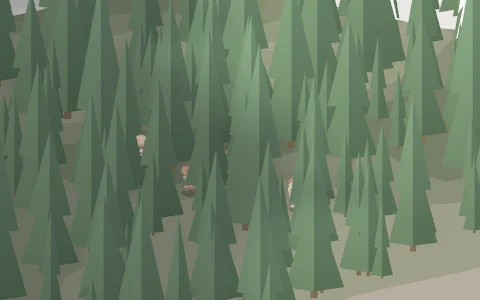
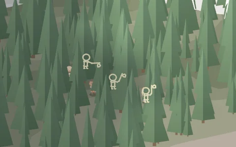
Twenty residents against a swarm of 150, seen through a 390 by 800 slice of the screen.
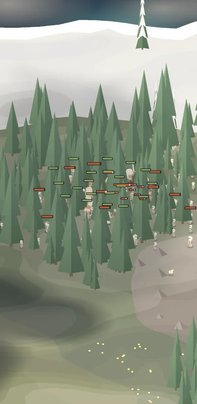
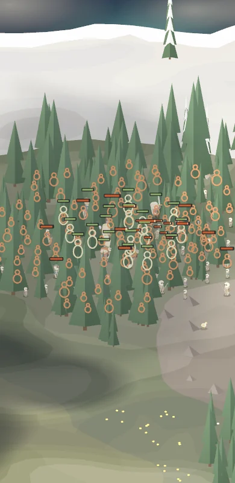
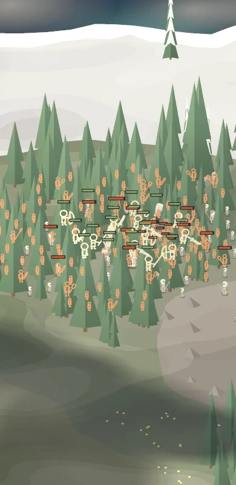
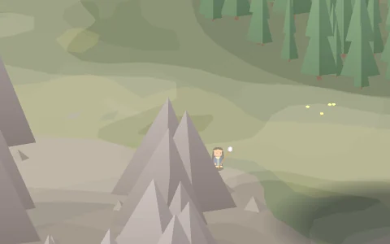
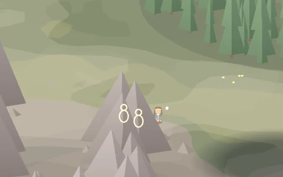
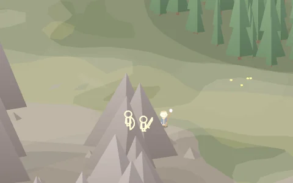
Residents are read from the pose they are drawn in; monsters ride one generic two-legged or four-legged skeleton driven by the clip their own rig is playing.
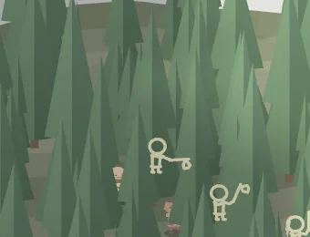
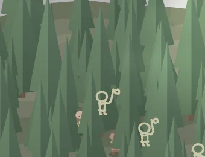
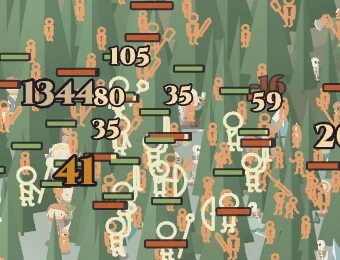
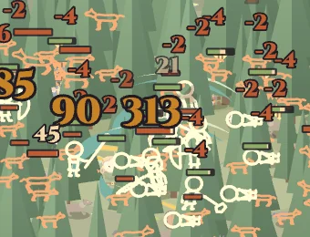